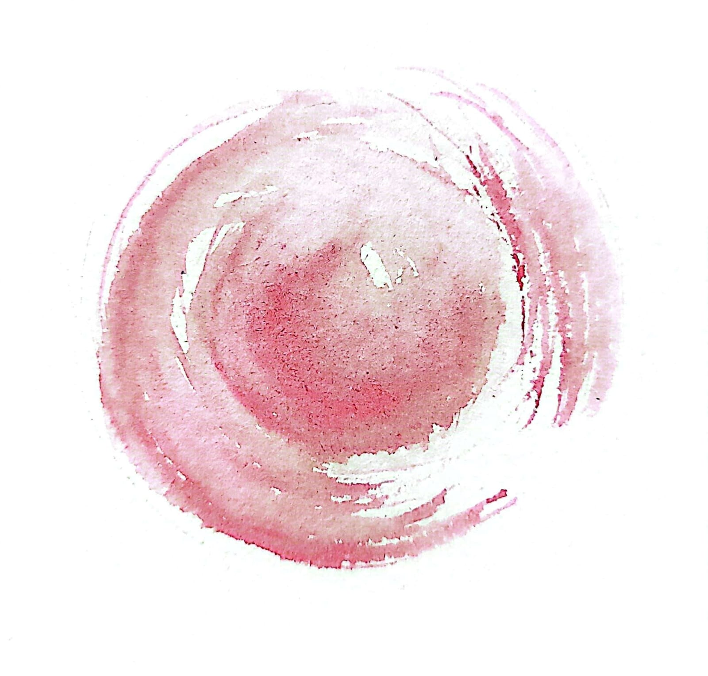
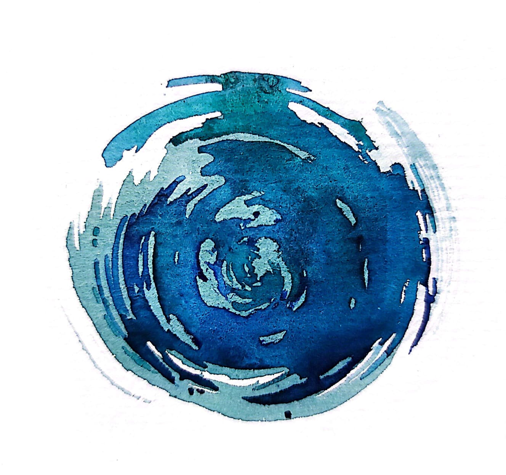
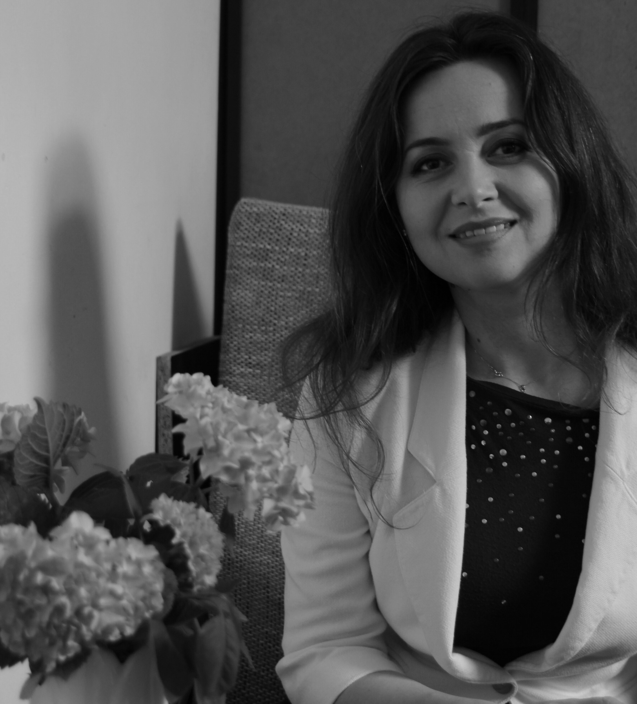
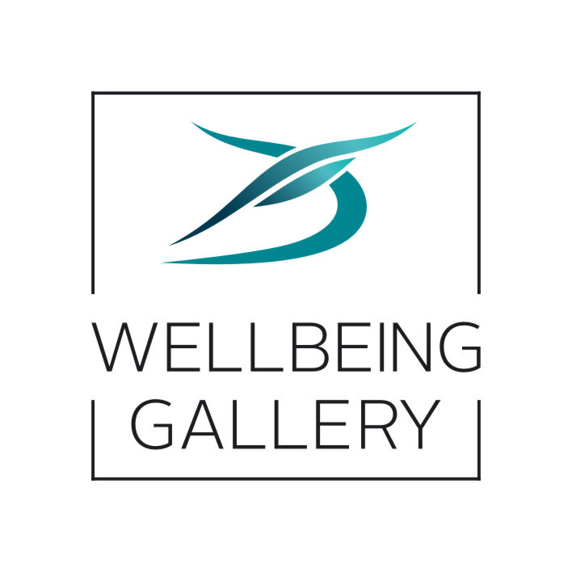

Dorina Savin (Socaciu)
Artist Plastic și Psihoterapeut

Altfel de pictura


Valori
|  |  |
| Emoții | Univers cromatic |
| Totul a început din dragoste pentru oameni și artă. Din dorința de a dărui frumusețe și bucurie. De a trăi cu emoție, în mod normal și natural propria simplitate. | Simpla atingere a unui tablou este misterioasă. Două dimensiuni – culoarea și apa au fuzionat, generând totul. Culorile încep să curgă simplu și natural ca apa, în emoții și senzații, exprimate pur și simplu cu iubire. Aceasta este povestea și farmecul semnăturii WellBeing Gallery. |
| Amintiri | Stare de bine |
| Suntem propriul nostru timp și ceea ce ne amintim. Fiecare zi este specială. Fiecare clipă are emoția ei eternă. Fiecare dintre noi avem momente unice în viața noastră pe care ni le amintim sau dorim să le împărtășim cu ceilalți. Atunci când admirăm un tablou, ne simțim seduși de o dorință irezistibilă de a ne conecta cu momente, locuri, oameni și amintiri pe care le-am experimentat. | Create cu grijă și dăruire tablourile și atelierele WellBeing sunt destinate să atingă și să răsfețe, aducând armonie și momente de bine în fiecare zi. Vă invităm să vă răsfățați în simfonia culorilor și a stării de bine. |
Despre mine
|  |
Numele meu este Dorina Savin (Socaciu). Am absolvit Facultatea de Arte Plastice, ca primă specializare și apoi Facultatea de Psihologie. Dintotdeauna am simțit și știut că rostul meu este de a dărui celor din jurul meu frumosul și de a face bine. Cu suflet, bucurie și implicare totală. După lungi căutări și provocări ale vieții, mi-am descoperit fericirea, petrecându-mi fiecare moment din viață, făcând ceea ce este cel mai important pentru mine – să pictez și să aduc starea de bine în sufletele oamenilor. De-a lungul anilor, drumul meu s-a înscris pe traseul lumii culorilor și al parfumurilor, acolo unde simplitatea și frumusețea ating și alintă pe multiple planuri, cu o naturalețe incredibilă, de o valoare inestimabilă pentru sufletul omului … care a uitat că trăiește într-o lume plină de realități ascunse ochilor fizici. Culoarea și parfumul sunt modalități cu ajutorul cărora simt și privesc în sufletului meu și al celor din jur și, pot spune din tot sufletul, că frumusețea este bucurie doar dacă o împărtășim cu cei din jur, din tot ceea ce suntem. Astfel am ales două variante concrete: ședintele de psihoterapie pe care le desfășor, ca modalitate de a fi alături de cei care au nevoie de sprijin în drumul lor prin viață, și atelierele de pictură pe care le susțin. Atelierele pe care le desfășor sunt o confirmare a faptului că nu suntem niciodată singuri, indiferent de provocări. Spațiul care se formează în aceste activități facilitează accesarea stării de bine și de relaxare, prin conștientizarea și asumarea propriei călătorii. În toți acești ani de căutări, am trecut prin nenumarate etape de redefinire a modului de raportare la munca mea. M-am considerat pe rând pictor, consilier în parfumuri, psiholog și psihoterapeut. Dincolo de toate, sunt un suflet care are misiunea de reconectare cu propria esență și însoțirea celor din jur în această călătorie. |
|  |
Despre galerieProiectul acesta este o cale … De a face din viață o sursă de bine și bucurie pentru oameni, inspirând, îndrumând sau instruind. De a găsi o modalitate prin care lumea din jur să devină mai bună, mai frumoasă, mai împlinită. De a găsi o modalitate prin care lumea din jur să devină mai bună, mai frumoasă, mai împlinită. De a contribui cu ceva la viața celor din jur – să-i ajut să-și sporească bucuria, să înțeleagă și să simtă cât sunt de iubiți. De a face ceva de dragul acelui ceva. Cu încredere și dăruire totală, în care să vezi sens, valoare de bine și frumos în sine care merită. |
Galerie
Studio
| Ateliere individuale | Ateliere de grup | Ateliere pentru companii |
|---|---|---|
|
Obiective: relaxare prin pictură, terapie prin artă, autocunoaștere, explorarea tehnicilor de pictură în acuarelă și în ulei, exprimarea emoțiilor prin materiale plastice, experimentare, descoperirea diverselor materiale și tehnici Durată: 120 min Locație: în aer liber, acasă, într-un atelier de pictură |
Obiective: relaxare prin pictură, terapie prin artă, autocunoaștere, explorarea tehnicilor de pictură în acuarelă și în ulei, exprimarea emoțiilor prin materiale plastice, experimentare, intercunoaștere, socializare Număr de persoane: 10 Durată: 120 min Locație: în aer liber, acasă, într-un atelier de pictură, într-o locație publică, într-o cafenea, într-o florărie, într-un magazin de decorațiuni, într-un showroom de prezentare |
Obiective: relaxare prin pictură, terapie prin artă, autocunoaștere, explorarea tehnicilor de pictură în acuarelă și în ulei, exprimarea emoțiilor prin materiale plastice, experimentare, intercunoaștere și autodezvăluire, socializare, focus pe experiențe multisenzoriale (cu parfumuri, flori, muzică, gustări – prăjituri, cafea), fără accent pe performanțe artistice, stimularea creativității și a stării de bine a angajaților, creșterea rezilienței emoționale, gestionarea stresului, creșterea performanței profesionale în mediul organizațional Număr de persoane: 10 Durată: 120 min Locație: într-o ieșire de teambuilding, în pauzele de la muncă, în natură sau în spații de relaxare din birou |